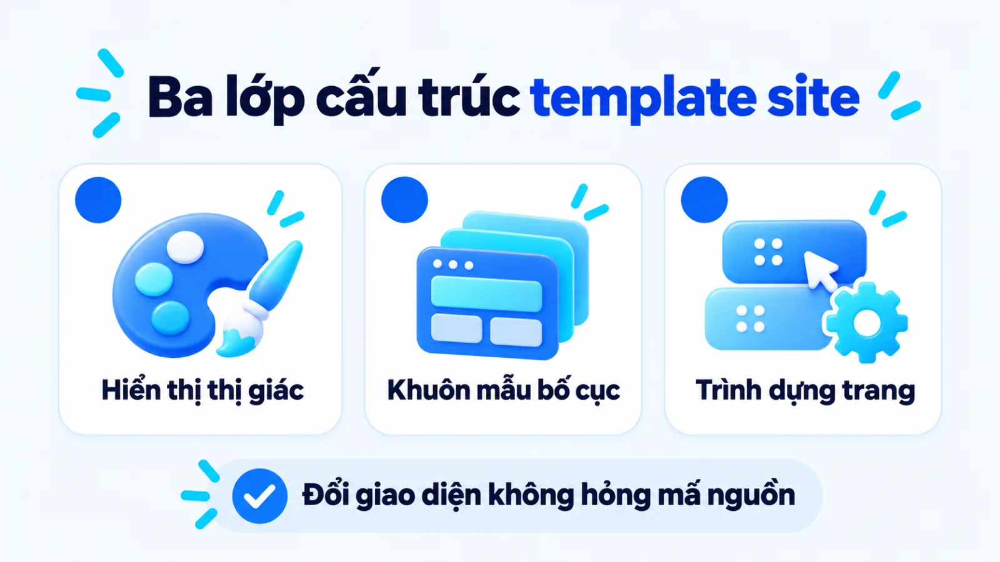
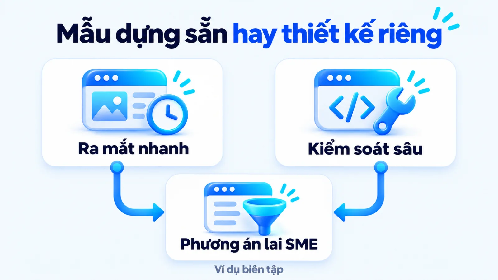
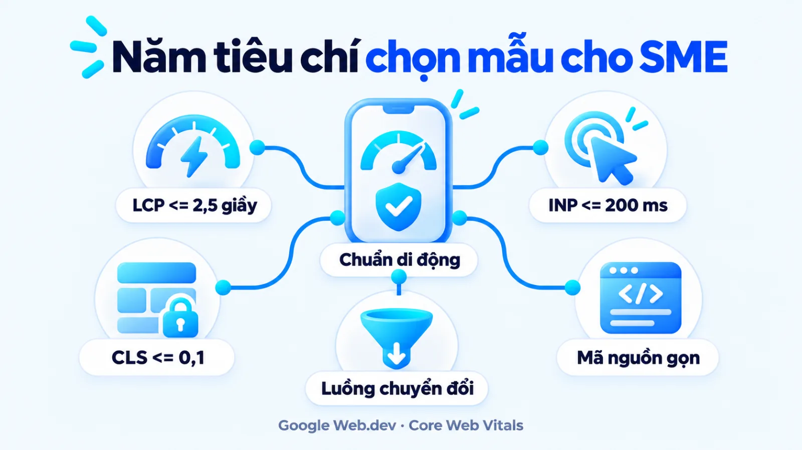
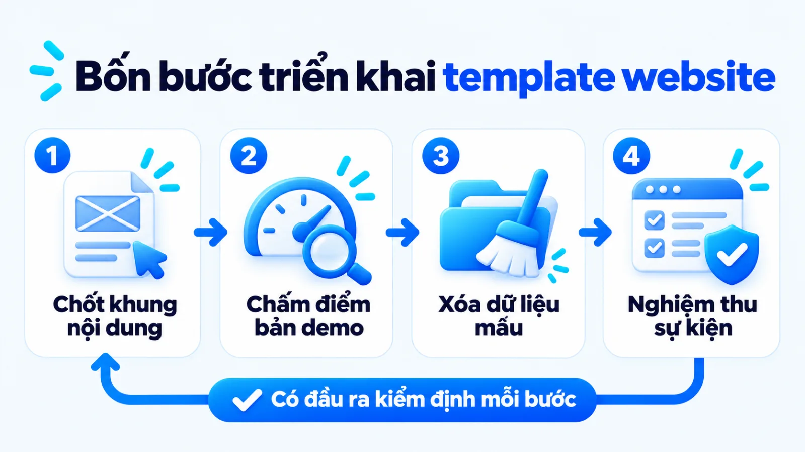
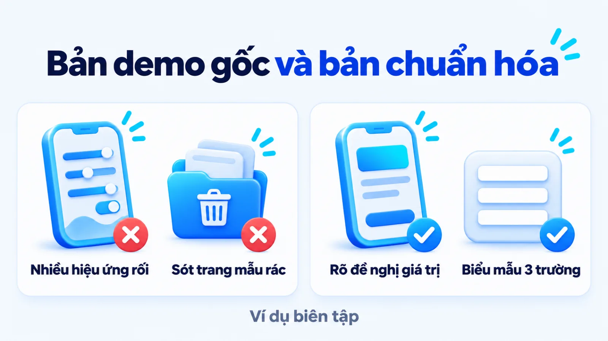
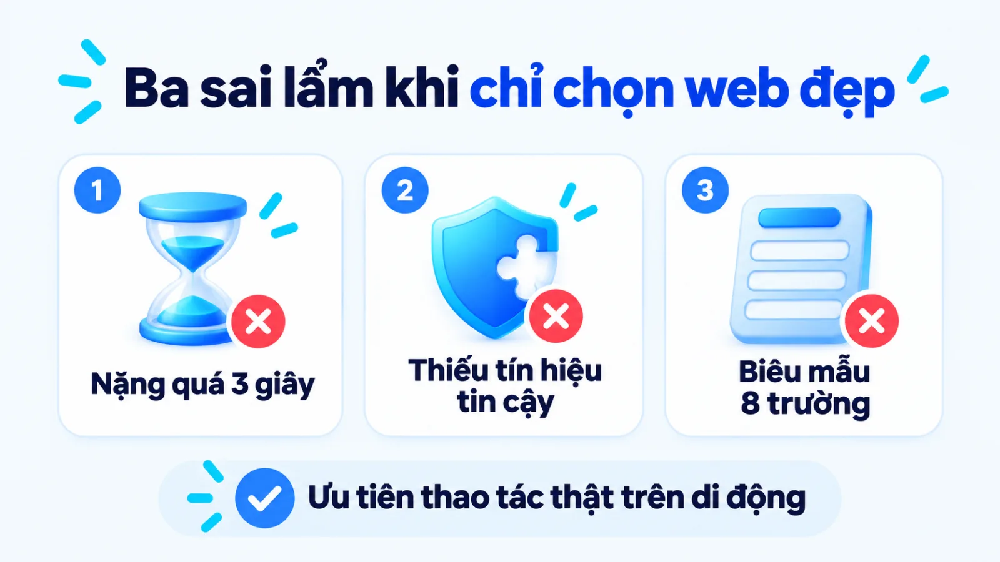
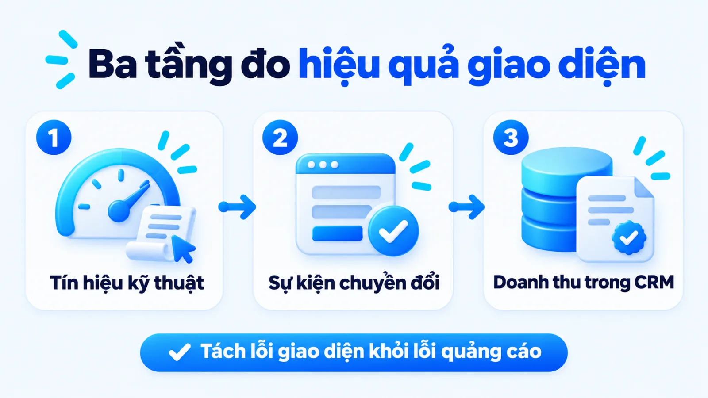

Template site là gì, cách chọn mẫu cho SME
Template site là bộ khung giao diện và bố cục trang web được lập trình sẵn để doanh nghiệp thay thế nội dung, hình ảnh cùng nhận diện thương hiệu mà không phải viết mã nguồn từ đầu. Với doanh nghiệp vừa và nhỏ, chọn mẫu có sẵn hay thiết kế riêng là sự đánh đổi giữa tốc độ đưa trang vào vận hành với mức độ kiểm soát luồng hành vi và hiệu suất tải trang dài hạn. Nhiều đội ngũ duyệt mẫu vì hiệu ứng bắt mắt trên máy tính, nhưng khi chạy chiến dịch trên di động thì tốc độ tải chậm và bố cục lệch hành trình mua lại làm rớt tỷ lệ khách để lại thông tin. Tôi là Lê Tuấn Việt, Marketing Leader tại TAKI Group. Trong bài viết này, tôi làm rõ ranh giới giữa hai phương án phát triển web, tiêu chí kiểm định kỹ thuật trước khi mua mẫu và cách đọc dữ liệu chuyển đổi sau bàn giao.
- Đăng ngày
- Cập nhật

Tóm tắt nhanh
- Template site giúp doanh nghiệp vừa và nhỏ rút ngắn thời gian ra mắt và tiết kiệm ngân sách khởi tạo, nhưng chỉ phát huy hiệu quả khi bố cục khớp với hành trình ra quyết định của người mua.
- Trước khi mua giao diện website, đội ngũ cần đo trực tiếp đường dẫn bản demo trên thiết bị di động theo ba ngưỡng Core Web Vitals gồm LCP từ 2.5 giây trở xuống, INP từ 200 mili giây trở xuống và CLS từ 0.1 trở xuống.
- Mọi dự án triển khai mẫu template website phải trải qua bốn bước có đầu ra kiểm định từ chốt luồng hành vi, đo kỹ thuật bản demo, chuẩn hóa nội dung thương hiệu đến kiểm thử sự kiện chính trên GA4.
- Hiệu quả giao diện web phải được đọc đồng thời qua ba tầng gồm tín hiệu tương tác kỹ thuật, khách hàng tiềm năng đạt chuẩn và doanh thu thực tế xác nhận trong CRM.
Mục lục bài viết8 phần
Template site là gì trong vận hành website SME
Template site (website giao diện mẫu) là bộ khung giao diện và bố cục trang web được thiết kế, lập trình sẵn để doanh nghiệp thay thế nội dung, hình ảnh và nhận diện thương hiệu mà không cần viết mã nguồn từ đầu. Ba thành phần cốt lõi cấu thành một gói giao diện mẫu gồm lớp hiển thị thị giác, hệ thống tệp khuôn mẫu bố cục và lớp chức năng đi kèm.
Trong vận hành thực tế tại SME (doanh nghiệp vừa và nhỏ), nhiều đội ngũ thường gọi chung mọi phần hiển thị trên màn hình là giao diện. Tuy nhiên, tài liệu kỹ thuật năm 2024 của WordPress Developer Resources phân tách rõ theme (gói giao diện tổng thể) là tập hợp tệp mã nguồn và bảng kiểu định hình diện mạo chung, còn template (tệp khuôn mẫu con) quy định layout (bố cục sắp xếp khối) cho từng trang riêng như trang chủ hay trang dịch vụ.
Khi đặt website vào tổng thể Marketing cho doanh nghiệp, một bộ khung mẫu không đơn thuần là lớp áo thẩm mỹ bên ngoài mà là hạ tầng dẫn dắt người xem từ lúc tìm hiểu thông tin đến khi gửi yêu cầu tư vấn. Hiểu rõ cấu tạo bên trong của gói mẫu giúp người phụ trách chủ động kiểm soát tốc độ tải, khả năng mở rộng trang đích và chi phí vận hành dài hạn.

Ba thành phần cốt lõi của một website mẫu
Một gói website mẫu hoàn chỉnh khi bàn giao cho doanh nghiệp được cấu tạo từ ba lớp kỹ thuật hoạt động độc lập nhưng liên kết chặt chẽ với nhau. Ba thành phần cốt lõi của một website mẫu bao gồm:
- Lớp hiển thị thị giác (Visual Styling): Hệ thống bảng kiểu quy định bảng màu chủ đạo, cặp phông chữ, khoảng cách dòng, kích thước nút bấm và hiệu ứng chuyển động nhằm thể hiện nhận diện thương hiệu trên màn hình.
- Hệ thống tệp khuôn mẫu bố cục (Page Templates): Các khung cấu trúc quy định vị trí sắp xếp khối nội dung cho từng nhóm trang như trang chủ, danh mục sản phẩm, bài viết chuyên môn và trang đích thu thập thông tin.
- Lớp chức năng và công cụ dựng trang (Functional Layer): Các đoạn mã xử lý biểu mẫu, thanh điều hướng, cùng sự hỗ trợ của Page Builder (trình dựng trang kéo thả) giúp nhân sự marketing chỉnh sửa bố cục mà không cần can thiệp mã nguồn.
Khi nào SME nên và không nên dùng mẫu có sẵn
Không phải bài toán kinh doanh nào cũng cần chi ngân sách lớn cho Custom Design (thiết kế độc quyền từ đầu). Doanh nghiệp vừa và nhỏ nên ưu tiên dùng mẫu có sẵn trong ba trường hợp: khi cần ra mắt nhanh để kiểm chứng nhu cầu thị trường của sản phẩm mới; khi luồng mua hàng đi theo chuẩn phổ thông từ đọc bài tư vấn đến điền biểu mẫu báo giá; hoặc khi nội bộ chưa có nhân sự lập trình chuyên trách.
Ngược lại, doanh nghiệp không nên dùng gói mẫu đại trà khi mô hình đòi hỏi tự cấu hình thông số kỹ thuật, tính báo giá đa biến theo thời gian thực hoặc đồng bộ sâu với phần mềm nội bộ. Ranh giới hiệu quả nằm ở khâu biên tập: giữ khung mã nguồn sạch nhưng sắp xếp lại thông tin theo đúng câu hỏi của khách hàng thay vì điền chữ lấp đầy bản demo. Dùng khung có sẵn không phải là sao chép nguyên bản.
Template site khác thiết kế website riêng thế nào
Khác biệt cốt lõi giữa template site và thiết kế website riêng nằm ở sự đánh đổi giữa tốc độ ra mắt, chi phí đầu tư ban đầu với mức độ kiểm soát mã nguồn và khả năng tùy biến luồng chuyển đổi dài hạn. Năm tiêu chí đối chiếu trực tiếp trong bảng dưới đây giúp chủ doanh nghiệp chọn phương án khớp với giai đoạn tăng trưởng.
| Tiêu chí đối chiếu | Template site dựng sẵn | Thiết kế website riêng |
|---|---|---|
| Chi phí khởi tạo | Thấp đến trung bình, tận dụng bộ khung mã nguồn đã được phát triển sẵn | Cao hơn đáng kể vì phải chi trả cho khâu nghiên cứu, vẽ giao diện và lập trình riêng |
| Thời gian vận hành | Đưa vào chạy thực tế nhanh sau khi thay thế nội dung, hình ảnh và gắn mã đo | Kéo dài qua nhiều vòng từ phân tích nghiệp vụ, duyệt khung dây đến kiểm thử |
| Độ linh hoạt cấu trúc | Giới hạn trong các biến thể bố cục mà nhà phát triển gói giao diện hỗ trợ | Tùy biến hoàn toàn luồng trang và tương tác theo hành trình mua đặc thù |
| Hiệu suất và kỹ thuật | Dễ dư thừa mã CSS và JavaScript nếu chọn gói đa năng nhồi nhét nhiều hiệu ứng | Mã nguồn tinh gọn theo đúng tính năng sử dụng thực tế nếu đội ngũ code chuẩn |
| Điều kiện phù hợp | Cần xác thực thị trường nhanh, luồng chuyển đổi chuẩn, ngân sách và nhân sự gọn | Đã rõ chân dung khách hàng, yêu cầu tích hợp hệ thống sâu và định vị khác biệt |
Giới hạn khi đọc bảng: sự so sánh trên đặt trong điều kiện cả hai phương án đều được thực hiện bởi đội ngũ tuân thủ chuẩn kỹ thuật web và nguyên tắc Responsive Web Design (thiết kế web đáp ứng trên nhiều kích thước màn hình) theo khuyến nghị năm 2024 của Google Search Central. Một dự án thiết kế riêng nhưng do đơn vị thiếu kinh nghiệm tối ưu hiệu suất thực hiện vẫn có thể tải chậm và lỗi cấu trúc hơn một gói mẫu tiêu chuẩn của nhà phát triển uy tín.

Khi hoàn thiện chiến lược digital marketing, tôi ưu tiên phương án lai: dùng bộ khung nền nhẹ, sạch mã nguồn cho nhóm trang thông tin chung và thiết kế tùy chỉnh riêng cho trang đích chuyển đổi trọng tâm. Cách phân bổ này giúp doanh nghiệp vừa giữ được tốc độ ra mắt chiến dịch, vừa kiểm soát chặt điểm chạm tạo đơn hàng.
Trong các dự án ứng dụng AI (trí tuệ nhân tạo) và Vibe Coding (phương pháp lập trình có AI hỗ trợ) do tôi triển khai để xây dựng 5 website cùng hệ thống quản trị vận hành, việc chuẩn hóa cấu trúc từ đầu giúp khách hàng rút ngắn 90% thời gian hoặc tiết kiệm 95% chi phí phát triển, đồng thời chuẩn hóa quy trình cho hơn 50 doanh nghiệp.
Năm tiêu chí chọn giao diện website cho SME
Chọn giao diện website cho doanh nghiệp vừa và nhỏ là chấm điểm bản demo theo luồng chuyển đổi và nền tảng kỹ thuật thực tế. Để thu hút khách hàng tiềm năng qua SEO (tối ưu hóa công cụ tìm kiếm) và quảng cáo trả phí, đội ngũ cần đối chiếu năm tiêu chí kiểm định cốt lõi dưới đây.
- Bố cục theo hành trình mua: Sắp xếp mạch lạc từ đề nghị giá trị, bằng chứng tin cậy đến nút kêu gọi hành động mà không bị hiệu ứng che khuất.
- Đạt chuẩn Core Web Vitals (bộ chỉ số thiết yếu đo sức khỏe trang web của Google): Tốc độ tải LCP (hiển thị nội dung lớn nhất) từ 2.5 giây trở xuống, INP (độ trễ tương tác) từ 200 mili giây trở xuống và CLS (dịch chuyển bố cục) từ 0.1 trở xuống.
- Ưu tiên hiển thị di động: Giao diện tương thích hoàn toàn với cơ chế lập chỉ mục ưu tiên di động và thao tác một ngón cái trên điện thoại.
- Nền tảng SEO kỹ thuật sạch: Thứ bậc thẻ tiêu đề chuẩn xác, mã nguồn gọn nhẹ và hỗ trợ sẵn dữ liệu có cấu trúc.
- Linh hoạt mở rộng quy mô: Cho phép nhân bản trang đích, tùy chỉnh biểu mẫu thu thập dữ liệu và gắn mã đo lường không làm vỡ khung.

Cấu trúc bố cục bám sát hành trình ra quyết định
Một giao diện tốt phải trả lời đúng thứ tự câu hỏi trong đầu khách hàng khi họ vừa nhấp vào trang từ kết quả tìm kiếm hoặc mẫu quảng cáo. Khi người dùng đang kết hợp SEO và quảng cáo Google để đối chiếu các nhà cung cấp, màn hình đầu tiên cần nói rõ doanh nghiệp cung cấp giải pháp gì, cho đối tượng nào và giải quyết vấn đề ra sao trước khi yêu cầu họ để lại số điện thoại.
Thay vì bị cuốn theo dải băng chuyền trượt tự động hoặc hình ảnh trừu tượng chiếm hết màn hình đầu tiên trên bản demo, người duyệt mẫu nên kiểm tra các khối chức năng phục vụ chuyển đổi. Những khối bắt buộc phải có gồm khu vực nêu lợi ích cốt lõi, bảng đối chiếu gói dịch vụ, mục giải đáp thắc mắc, hồ sơ năng lực thực tế và CTA (lời kêu gọi hành động) đặt ở điểm người đọc vừa tiếp nhận đủ thông tin.
Tốc độ tải, hiển thị di động và nền tảng SEO kỹ thuật
Tài liệu năm 2024 của Google Search Central về Core Web Vitals nêu rõ bộ chỉ số này đo trải nghiệm thực tế về tốc độ tải, độ phản hồi và độ ổn định bố cục, được hệ thống tìm kiếm khuyến nghị đạt mức tốt. Theo chuẩn năm 2024 trên web.dev của Google Chrome Developers ở phân vị thứ 75 trên di động và máy tính, LCP cần đạt trong 2.5 giây, INP tối đa 200 mili giây và CLS tối đa 0.1.
Vì sao tốc độ tải trên điện thoại lại quyết định trực tiếp đến chi phí thu hút khách hàng? Dữ liệu chuẩn ngành năm 2018 trên Think with Google (phân tích hàng triệu phiên truy cập di động toàn cầu) chỉ ra rằng khi thời gian tải di động tăng từ 1 giây lên 3 giây, xác suất thoát trang tăng thêm 32%, và 53% lượt truy cập di động rời bỏ trang nếu tải quá 3 giây.
- 2.5 giây
- Ngưỡng chuẩn LCP tối đa ở phân vị thứ 75 theo công bố năm 2024 của web.dev (Google Chrome Developers)
- 32%
- Mức tăng xác suất thoát trang khi tải di động tăng từ 1 lên 3 giây do Think with Google công bố năm 2018
- 53%
- Tỷ lệ lượt truy cập di động rời trang nếu tải quá 3 giây trên tập mẫu toàn cầu năm 2018 của Think with Google
Bên cạnh tốc độ, tài liệu năm 2024 của Google Search Central về Mobile-first Indexing (lập chỉ mục ưu tiên thiết bị di động) xác nhận Google sử dụng trình thu thập thông tin giả lập điện thoại thông minh để đọc phiên bản di động của trang web phục vụ lập chỉ mục và xếp hạng. Vì vậy, tôi luôn kiểm tra đường dẫn bản demo của nhà cung cấp trực tiếp trên một chiếc điện thoại tầm trung sử dụng mạng di động trước khi duyệt mua, thay vì chỉ xem trên màn hình máy tính cấu hình cao tại văn phòng.
Khả năng tùy biến giao diện web khi mở rộng quy mô
Một giao diện web chỉ thực sự kinh tế khi nó không khóa chặt đội ngũ marketing vào một khuôn mẫu cố định. Trong quá trình triển khai hệ thống content marketing và chạy chiến dịch theo mùa vụ, nhân sự phụ trách sẽ thường xuyên cần tạo thêm trang đích mới, chèn bảng so sánh ba cột, bổ sung hộp ghi chú hoặc rút gọn các trường trong biểu mẫu.
Trước khi duyệt mua, người phụ trách nên yêu cầu nhà cung cấp thao tác thử việc nhân bản một trang đích, chèn thêm khối bảng ba cột và chỉnh sửa trường biểu mẫu ngay trên môi trường quản trị. Nếu những thay đổi cơ bản này làm lệch bố cục di động hoặc bắt buộc can thiệp lại vào tệp mã nguồn, gói mẫu đó sẽ gây tốn kém chi phí vận hành khi doanh nghiệp mở rộng chiến dịch.
Quy trình 4 bước triển khai mẫu template website
Quy trình triển khai mẫu template website cho doanh nghiệp vừa và nhỏ gồm bốn bước tuần tự từ chốt mục tiêu chuyển đổi, kiểm định kỹ thuật bản demo, chuẩn hóa nhận diện nội dung đến kiểm thử biểu mẫu và sự kiện trên GA4 (công cụ phân tích web Google Analytics 4). Bốn bước thực thi kèm đầu ra dưới đây giúp đội ngũ tránh lỗi mua giao diện về rồi phải xây lại.
- 01Chốt luồng hành viXác định mục tiêu chuyển đổi và khung nội dung trước khi tìm mẫu.
- 02Kiểm định bản demoĐo điểm Core Web Vitals, thẻ tiêu đề và hiển thị di động của URL mẫu.
- 03Chuẩn hóa giao diệnThay nội dung thật, đồng bộ nhận diện và xóa toàn bộ trang mẫu thừa.
- 04Kiểm thử đo lườngRút gọn trường biểu mẫu, gắn mã sự kiện chính và điền thử trên di động.

Bước 1: Chốt mục tiêu chuyển đổi và luồng hành vi
Liệt kê toàn bộ các loại trang cần có trên website cùng mục tiêu chuyển đổi cụ thể của từng trang trước khi mở bất kỳ kho giao diện nào để tìm kiếm. Đội ngũ cần vẽ sơ đồ luồng di chuyển của khách hàng từ trang bài viết chuyên môn, trang danh mục dịch vụ đến trang bảng giá và điểm điền biểu mẫu liên hệ, tương tự cách các dự án tư vấn chiến lược marketing khóa chặt bài toán kinh doanh trước khi chọn công cụ thực thi.
Đầu ra: sơ đồ cấu trúc trang kèm danh sách hành động chuyển đổi mục tiêu và khung nội dung chính cho từng loại trang.
Bước 2: Kiểm định bản demo theo khung kỹ thuật
Sao chép đường dẫn URL bản demo của ba đến năm mẫu giao diện ứng viên đưa vào công cụ PageSpeed Insights để đo trực tiếp các chỉ số LCP, INP và CLS trên thiết bị di động. Đồng thời, người phụ trách mở mã nguồn trang demo trên trình duyệt để kiểm tra xem mỗi trang có đúng một thẻ H1 hay không, và các thẻ H2, H3 có dùng để phân cấp nội dung thật thay vì bị nhà phát triển dùng sai cho tiêu đề chân trang hay thanh bên không.
Đầu ra: bảng chấm điểm kỹ thuật của các mẫu ứng viên, chốt một mẫu đạt ngưỡng Core Web Vitals trên di động và chuẩn cấu trúc thẻ tiêu đề.
Bước 3: Chuẩn hóa phần thiết kế giao diện website
Thay thế toàn bộ văn bản tiếng Anh giả định và ảnh minh họa có sẵn bằng nội dung, hình ảnh thực tế của doanh nghiệp, đồng thời thiết lập lại bảng màu, phông chữ để giữ sự nhất quán giọng thương hiệu trên mọi điểm chạm. Toàn bộ hình ảnh tải lên cần được nén về định dạng WebP, khai báo rõ kích thước chiều rộng và chiều cao trong mã HTML để ngăn hiện tượng nhảy bố cục CLS khi trang đang tải.
Một sai sót kỹ thuật rất phổ biến ở bước này là quản trị viên nhập nguyên gói dữ liệu mẫu (demo import) gồm hàng chục trang giới thiệu, bài viết nháp và hình ảnh mẫu của nhà cung cấp nhưng quên xóa đi trước khi mở lập chỉ mục. Những trang rác này khi bị Google thu thập sẽ làm loãng chủ đề của website và tiêu tốn ngân sách thu thập dữ liệu của công cụ tìm kiếm.
Đầu ra: website hoàn chỉnh trên môi trường thử nghiệm với nội dung thật tự đủ ngữ cảnh, ảnh đã tối ưu dung lượng và sạch toàn bộ trang mẫu dư thừa.

Bước 4: Kiểm thử biểu mẫu, tốc độ và sự kiện đo lường
Rà soát lại mọi biểu mẫu đăng ký trên trang theo khuyến nghị từ nghiên cứu khả năng sử dụng và theo dõi chuyển động mắt năm 2016 của Nielsen Norman Group về thiết kế biểu mẫu: cắt bỏ tối đa các trường thông tin không cần thiết để giảm tải nhận thức và hạn chế ma sát nhập liệu trên màn hình nhỏ. Cách tổ chức trường thông tin hợp lý giúp doanh nghiệp tối ưu tỷ lệ thu thập dữ liệu khách hàng tự nguyện mà không làm người dùng bỏ cuộc giữa chừng.
Tiếp đó, đội ngũ gắn mã theo dõi và đánh dấu hành động gửi biểu mẫu thành công là key event (sự kiện chính) trên GA4. Theo tài liệu năm 2024 của Google Analytics Help, key event là sự kiện đo lường hành động mang lại giá trị trực tiếp cho hoạt động kinh doanh. Nhân sự phụ trách cần điền thử biểu mẫu trên cả điện thoại iOS lẫn Android để xác nhận sự kiện bắn đúng một lần và dữ liệu đổ thẳng về hệ thống quản trị.
Đầu ra: biên bản nghiệm thu xác nhận biểu mẫu hoạt động mượt trên di động, dữ liệu truyền đủ tham số nguồn chiến dịch và GA4 ghi nhận chính xác sự kiện chính.
Ba sai lầm khi chỉ chọn theo tiêu chí website đẹp
Ba sai lầm phổ biến khiến một website đẹp trên bản demo nhưng lại làm rớt tỷ lệ chuyển đổi thực tế gồm lạm dụng hiệu ứng chuyển động làm chậm tốc độ tải, giữ nguyên bố cục mẫu xa rời tâm lý mua hàng nội địa và đặt biểu mẫu quá nhiều trường gây đứt gãy thao tác. Hiểu rõ cơ chế tâm lý phía sau giúp chủ doanh nghiệp tránh bẫy thị giác.
Vì sao nhiều chủ doanh nghiệp duyệt mua một giao diện trông rất hiện đại nhưng khi chạy quảng cáo lại không ra đơn hàng? Nghiên cứu trải nghiệm người dùng năm 2024 của Nielsen Norman Group lý giải qua Aesthetic-Usability Effect (hiệu ứng thẩm mỹ khả dụng): người dùng thường đánh giá sản phẩm bắt mắt là dễ dùng hơn thực tế. Tuy nhiên, giao diện đẹp chỉ giúp bỏ qua bất tiện nhỏ chứ không thể bù đắp các lỗi khả dụng nghiêm trọng cản trở thao tác.

Khi áp vào quá trình chọn mẫu cho doanh nghiệp vừa và nhỏ, hiệu ứng thị giác trên màn hình máy tính của người duyệt thường che khuất ba lỗi vận hành nghiêm trọng dưới đây:
- Chọn mẫu nặng hiệu ứng chuyển động và video nền: Cách làm sai là chọn bản demo có hiệu ứng cuộn lệch tầng và video nền tự động phát ở đầu trang, khiến thời gian tải di động vượt quá 3 giây (mốc mà 53% lượt truy cập rời trang theo dữ liệu năm 2018 của Think with Google). Cách làm đúng là ưu tiên trang đích tĩnh có hình ảnh nén nhẹ dưới ngưỡng LCP 2.5 giây để khách thấy ngay đề nghị giá trị.
- Giữ nguyên bố cục demo nước ngoài lệch hành vi mua nội địa: Trong nhiều trường hợp, doanh nghiệp lắp nguyên thứ tự khối của bản demo vốn chỉ đặt khẩu hiệu ngắn rồi dẫn thẳng tới nút thanh toán thẻ tín dụng, thiếu thông tin giải tỏa rào cản niềm tin. Để phù hợp với khách hàng SME tại Việt Nam, đội ngũ nên bổ sung khối bảng giá tham khảo, chính sách bảo hành, hình ảnh nhân sự thật và nút kết nối Zalo nhanh trên di động.
- Đặt biểu mẫu nhiều trường bắt buộc vì muốn lọc khách sớm: Việc giữ nguyên biểu mẫu mặc định đòi hỏi điền nhiều ô thông tin như địa chỉ, mã số thuế và mô tả dài ngay lần đầu tiếp xúc đi ngược nguyên tắc giảm tải nhận thức năm 2016 của Nielsen Norman Group. Thay vì thu thập đủ thông tin ngay lập tức, người phụ trách nên rút gọn biểu mẫu đầu phễu về các trường cốt lõi, phần phân loại sâu chuyển cho bộ phận tư vấn khai thác khi gọi lại.
Ví dụ biên tập, không phải kết quả khách hàng thật
Tình huống minh họa: Đơn vị cung cấp quà tặng B2B (khách hàng doanh nghiệp) đổi từ mẫu nặng hiệu ứng sang bố cục chuẩn chuyển đổi
Trong một ví dụ biên tập, không phải kết quả khách hàng thật, một công ty quà tặng doanh nghiệp tại Hà Nội ban đầu chọn mẫu giao diện trình diễn hiệu ứng chuyển cảnh đồ họa nặng kèm biểu mẫu báo giá nhiều trường bắt buộc. Khi chạy chiến dịch cuối năm, phần lớn người mua truy cập bằng điện thoại gặp tình trạng khung hình bị giật và phải cuộn rất lâu mới thấy bảng ngân sách, dẫn đến thoát trang sớm.
Sau khi đội ngũ gỡ bỏ lớp hiệu ứng chuyển động ở đầu trang, đưa bảng phân nhóm gói quà theo ngân sách lên ngay dưới đoạn mở đầu và rút gọn biểu mẫu nhận báo giá qua Zalo xuống các trường cơ bản, luồng thao tác trên điện thoại mới trở nên thông suốt và bắt đầu ghi nhận yêu cầu tư vấn ổn định.
Cách đo hiệu quả giao diện và giới hạn dữ liệu
Hiệu quả của một giao diện website không đo bằng cảm nhận thẩm mỹ chủ quan mà phải được theo dõi qua hệ thống chỉ số ba tầng gồm tín hiệu tương tác kỹ thuật, khách hàng tiềm năng đạt chuẩn và doanh thu thực tế xác nhận. Bảng khung đo lường ba cột dưới đây tách bạch rõ vai trò, nguồn dữ liệu và giới hạn quy kết của từng tầng.
| Tầng đo và chỉ số | Cách tính và nguồn dữ liệu | Ý nghĩa và giới hạn quy kết |
|---|---|---|
| Tầng 1: Tương tác | Điểm LCP, INP, CLS từ Search Console; tỷ lệ cuộn trang và nhấp nút trên GA4 | Cho biết giao diện có tải mượt và giữ chân người đọc không; chưa phản ánh nhu cầu mua |
| Tầng 2: Khách đạt chuẩn | Số sự kiện chính (key event) hoàn tất biểu mẫu và tỷ lệ chuyển đổi ghi nhận trên GA4 | Đo khả năng thuyết phục của trang đích; cần lọc bỏ dữ liệu trùng lặp hoặc số điện thoại sai |
| Tầng 3: Doanh thu xác nhận | Chi phí trên mỗi khách tiềm năng, chi phí tạo đơn và doanh thu thực tế từ phần mềm quản trị | Xác nhận giá trị kinh doanh cuối cùng; phụ thuộc lớn vào tốc độ gọi lại và kỹ năng chốt đơn |
Giới hạn khi đọc bảng: mọi biến động chỉ số sau khi nâng cấp giao diện website đều phải đặt trong kỳ đo tối thiểu hai đến bốn tuần và đủ cỡ mẫu truy cập. Nếu doanh nghiệp vừa đổi giao diện, vừa đổi tệp quảng cáo hoặc tung khuyến mãi cùng lúc, bạn sẽ không thể tách bạch mức tăng CR (tỷ lệ chuyển đổi) đến từ bố cục web tốt hơn hay từ ưu đãi giá hấp dẫn hơn.

Để chẩn đoán đúng điểm nghẽn, người phụ trách cần kết hợp theo dõi sự kiện chính với việc đo lường chuyển đổi vi mô ở từng bước nhỏ trên trang. Nếu chỉ số tương tác như tỷ lệ cuộn tới bảng giá và lượt mở biểu mẫu đạt mức cao nhưng số lượt gửi thành công lại rất thấp, nguyên nhân nhiều khả năng nằm ở biểu mẫu bị lỗi hiển thị trên một số dòng điện thoại hoặc yêu cầu thông tin quá nhạy cảm.
Ngược lại, ngay cả khi triển khai chiến dịch cho một startup marketing digital có khung trang đích tối giản, nếu trang ghi nhận nhiều lượt điền biểu mẫu với CPL (chi phí trên mỗi khách tiềm năng) thấp nhưng trong CRM (hệ thống quản trị quan hệ khách hàng) không có khách đạt chuẩn và làm tăng CPA (chi phí thu hút khách hàng thực tế), nguyên nhân thường nằm ở thông điệp quảng cáo thu hút sai phân khúc.
Nguyên tắc đọc số liệu sau khi thay giao diện website
Không bao giờ kết luận một giao diện mới thất bại hay thành công chỉ sau vài ngày đầu tiên. Hãy kiểm tra báo cáo theo từng nhóm thiết bị (di động tách riêng với máy tính để bàn) và đối chiếu chất lượng cuộc gọi thực tế từ đội ngũ bán hàng trước khi quyết định chỉnh sửa lại bố cục.
Câu hỏi thường gặp về template site
Dùng chung mẫu template website có bị phạt trùng lặp SEO không?
Không, Google không phạt hành vi dùng chung bộ khung mã nguồn HTML và CSS nếu toàn bộ văn bản, hình ảnh, tiêu đề cùng dữ liệu trên trang được biên tập mới để giải quyết đúng nhu cầu tìm kiếm. Rủi ro giảm hiệu quả tìm kiếm thực tế thường phát sinh khi quản trị viên quên xóa các trang mẫu dư thừa của bản demo hoặc giữ nguyên cấu trúc thẻ tiêu đề bị sai thứ bậc từ nhà cung cấp. Do đó, bước dọn dẹp dữ liệu mẫu và kiểm tra chỉ mục trên Google Search Console luôn là yêu cầu bắt buộc trước khi mở lập chỉ mục.
Khi nào SME cần chuyển từ website mẫu sang thiết kế riêng?
Doanh nghiệp cần chuyển sang thiết kế riêng khi luồng mua hàng hoặc quy trình tính giá đòi hỏi tính năng tương tác đặc thù mà việc cài thêm tiện ích mở rộng vào giao diện mẫu làm tốc độ tải LCP vượt quá ngưỡng 2.5 giây. Ngoài ra, khi thương hiệu đã vượt qua giai đoạn xác thực thị trường và cần đồng bộ dữ liệu hai chiều theo thời gian thực với hệ thống quản trị khách hàng hoặc kho vận, kiến trúc tùy chỉnh sẽ an toàn và tiết kiệm chi phí bảo trì dài hạn hơn. Nếu cố chắp vá trên bộ khung mẫu cũ, chi phí sửa lỗi xung đột mã nguồn thường cao hơn việc xây dựng mới.
Page Builder kéo thả có làm chậm giao diện website không?
Có, các trình dựng trang kéo thả thường sinh thêm nhiều lớp thẻ HTML lồng nhau và tải kèm tệp CSS, JavaScript dung lượng lớn, dễ làm tăng độ trễ tương tác INP vượt ngưỡng 200 mili giây trên thiết bị di động. Tuy nhiên, doanh nghiệp vẫn kiểm soát được tốc độ nếu chọn gói giao diện nền tối giản, tắt toàn bộ tiện ích chuyển động không dùng đến và nén ảnh về định dạng nhẹ trước khi đăng tải. Sau khi dựng trang bằng công cụ kéo thả, đội ngũ bắt buộc phải đo lại điểm hiệu suất thực tế bằng PageSpeed Insights thay vì chỉ kiểm tra bằng mắt trên máy tính cá nhân.
Nên mua mẫu giao diện web trả phí hay dùng bản miễn phí?
Doanh nghiệp vừa và nhỏ nên ưu tiên bản trả phí chính ngạch từ nhà phát triển uy tín hoặc bản miễn phí nằm trên kho chính thức của nền tảng như WordPress.org để nhận được bản vá bảo mật định kỳ. Các gói trả phí chính thống thường có tài liệu hướng dẫn rõ ràng, mã nguồn được tối ưu cho thiết bị di động và đội ngũ hỗ trợ kỹ thuật khi nền tảng quản trị nội dung nâng cấp phiên bản mới. Ngược lại, việc tải các bản giao diện trả phí được chia sẻ trôi nổi không rõ nguồn gốc tiềm ẩn nguy cơ nhiễm mã độc chuyển hướng và mất quyền quản trị website.
Đổi giao diện website mới có làm tụt thứ hạng từ khóa cũ không?
Có, việc thay đổi giao diện sẽ làm biến động hoặc tụt thứ hạng nếu gói giao diện mới làm đổi cấu trúc đường dẫn URL, xóa mất dữ liệu có cấu trúc Schema, đảo lộn thứ bậc thẻ tiêu đề hoặc làm suy giảm chỉ số Core Web Vitals trên di động. Để bảo toàn tín hiệu xếp hạng, đội ngũ phải giữ nguyên đường dẫn của các trang đang có lưu lượng truy cập, đối chiếu toàn bộ thẻ meta trên môi trường thử nghiệm và kiểm tra tệp robots.txt trước khi chuyển đổi chính thức. Ngay sau khi kích hoạt giao diện mới, người phụ trách cần theo dõi sát báo cáo lập chỉ mục và trải nghiệm trang trên Google Search Console trong ít nhất bốn tuần liên tiếp.
Website mẫu có tích hợp được CRM và cổng thanh toán không?
Có, phần lớn các gói website mẫu trên những hệ quản trị phổ biến hiện nay đều hỗ trợ kết nối phần mềm quản trị khách hàng, cổng thanh toán trực tuyến và Google Analytics 4 thông qua biểu mẫu chuẩn, webhook hoặc Google Tag Manager. Điểm người phụ trách marketing cần kiểm tra kỹ trước khi mua là biểu mẫu mặc định của giao diện có cho phép gắn trường ẩn để lưu tham số nguồn chiến dịch UTM hay không. Nếu biểu mẫu đóng kín không truyền được nguồn truy cập về CRM, doanh nghiệp sẽ không thể đối chiếu chi phí quảng cáo với chất lượng khách hàng tiềm năng thực tế.
Kết luận
Quyết định chọn template site hay thiết kế riêng thực chất là bài toán phân bổ nguồn lực theo giai đoạn tăng trưởng: một bộ khung giao diện mẫu sạch mã nguồn, đạt ngưỡng tốc độ tải di động Core Web Vitals và sắp xếp bố cục đúng hành trình mua sẽ mang lại hiệu quả chuyển đổi cao hơn nhiều so với một giao diện phức tạp nhưng gây ma sát thao tác.
Ngay trong tuần này, bạn có thể tự kiểm tra website hiện tại hoặc bản demo dự định mua bằng cách dán đường dẫn vào PageSpeed Insights ở chế độ di động, đồng thời dùng điện thoại cá nhân điền thử biểu mẫu để đếm số lần chạm cho tới khi gửi xong. Nếu trang tải quá 3 giây trên di động hoặc biểu mẫu đòi hỏi nhiều trường thông tin không thiết yếu, hãy cắt gọn ngay trước khi tăng ngân sách quảng cáo.
Khi doanh nghiệp cần đồng bộ lại toàn bộ luồng trang đích với chiến lược nội dung, hệ thống theo dõi sự kiện GA4 và quy trình bàn giao khách hàng tiềm năng về CRM, việc chỉ thay một giao diện mới sẽ không giải quyết được tận gốc điểm nghẽn doanh thu. Website của bạn đang gặp vướng mắc ở tốc độ tải kỹ thuật, cấu trúc thông điệp thuyết phục trên trang đích hay ở khâu đo lường chuyển đổi thực tế?